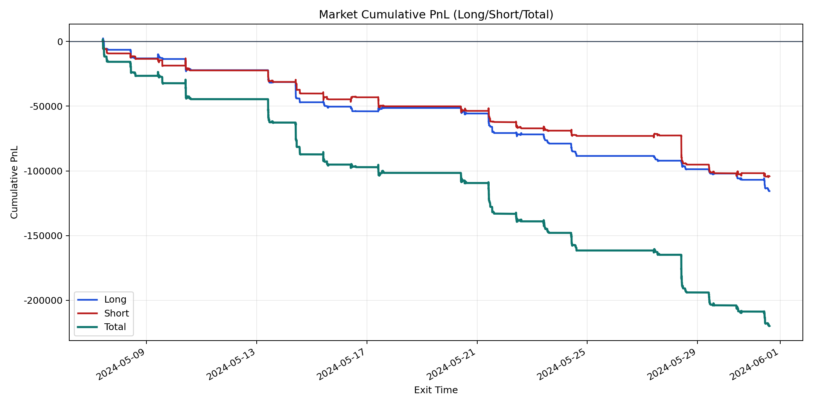
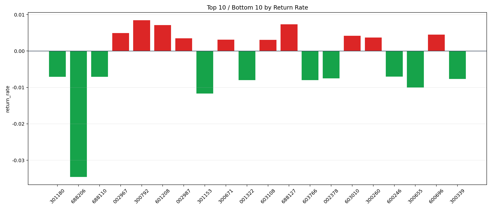

| repo_root | /home/haoranyou/data/output/dynamic_AUM_TAKER_index1000 |
|---|---|
| period_months | 1 |
| period_label | 2024-05-07_to_2024-05-31 |
| start_time | 2024-05-07 09:46:02 |
| end_time | 2024-05-31 14:41:47 |
| n_trades | 7596 |
| n_symbols | 252 |
| total_pnl | -219816.08719999986 |
| long_total_pnl | -115637.1726999988 |
| short_total_pnl | -104178.91450000108 |
| total_entry_notional | 136707196.00000003 |
| long_entry_notional | 72340930.0 |
| short_entry_notional | 64366266.0 |
| total_return_rate | -0.0016079335516471262 |
| long_return_rate | -0.0015985027107060803 |
| short_return_rate | -0.0016185328274285955 |
| top_symbols_by_return | ["300792", "688127", "601208", "002967", "600696", "603010", "300260", "002987", "300671", "603108"] |
| bottom_symbols_by_return | ["688206", "301153", "300655", "001322", "603766", "300339", "002378", "301180", "688110", "600246"] |

